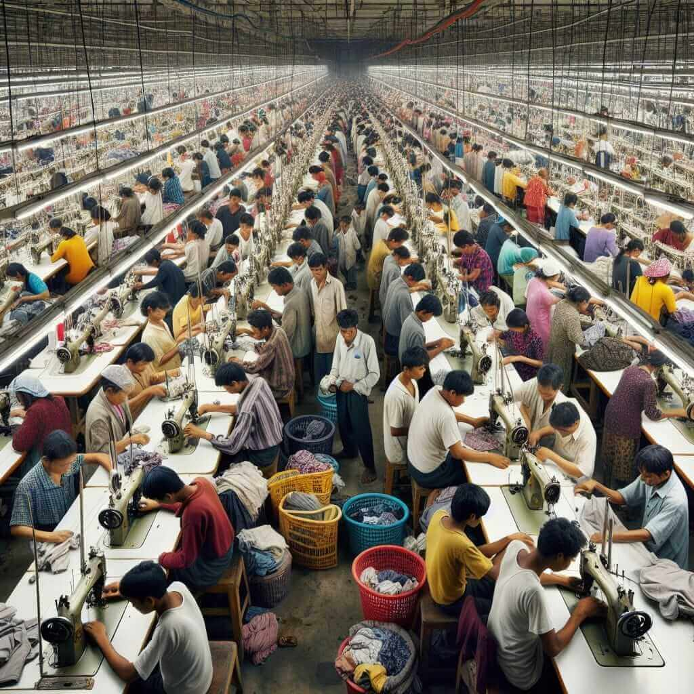
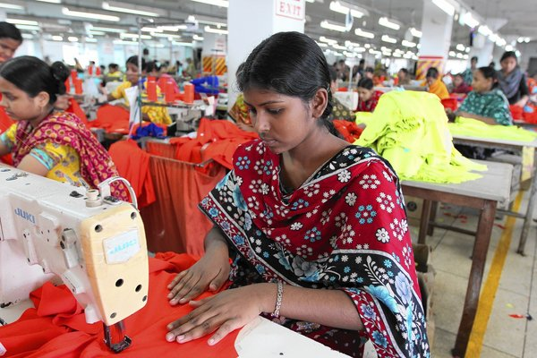
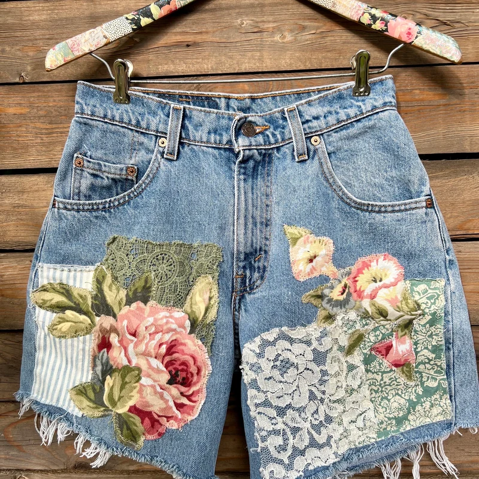

Fast fashion has a major impact on the environment. Producing clothing requires large amounts of water, especially for materials like cotton. In addition, the dyes and chemicals used in manufacturing often pollute rivers and oceans. A significant amount of clothing ends up in landfills each year, where it can take a long time to break down. Many fast fashion items are made from synthetic fabrics like polyester, which release microplastics into the environment when washed. These microplastics can harm marine life and enter the food chain.
Fast fashion also affects the people who make the clothing. Many workers in the industry are paid very low wages and work in unsafe or unhealthy conditions. In some cases, workers do not have basic rights or protections. There are also situations where child labor is involved, especially in countries where labor laws are not strongly enforced. Overall, the fast fashion system often prioritizes low production costs over fair treatment of workers.
Fast fashion creates social pressures to constantly buy new clothes in order to keep up with trends. This can lead to feelings of inadequacy or low self-esteem, especially among young people who are heavily influenced by social media. The desire to fit in or be seen as fashionable can drive people to purchase items they don’t really need, contributing to overconsumption and waste. Additionally, the fast pace of trends can make it difficult for individuals to develop their own personal style, as they may feel pressured to follow whatever is currently popular rather than expressing themselves through their clothing choices.

There are several better options available to address the issues associated with fast fashion. These include choosing sustainable and ethically-made clothing, supporting brands that prioritize fair labor practices, and reducing overall consumption by buying less and reusing what you have.
Some specific alternatives to fast fashion include:
DIY and upcycling are great ways to give new life to old clothing and reduce waste. Some ideas include: